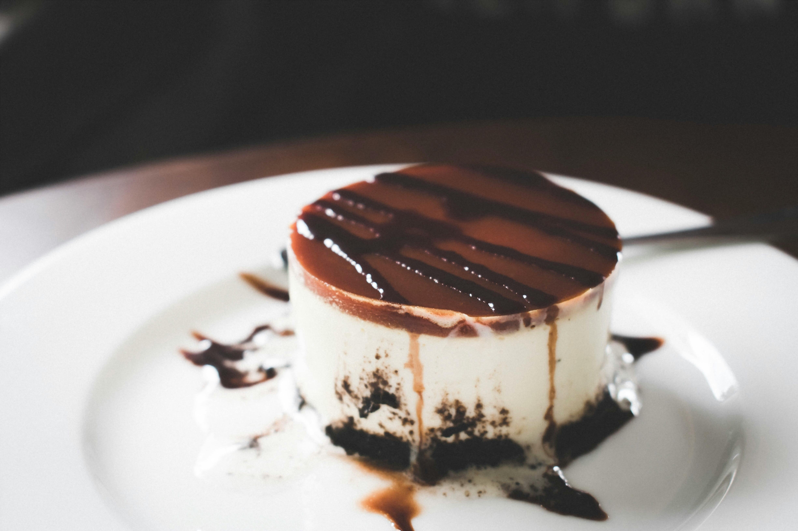

Receta
Deliciosos croissants caseros con masa hojaldrada perfecta y deliciosa lista para saborear.

Video
Deliciosos croissants caseros con masa hojaldrada perfecta y deliciosa lista para saborear.
Ver VideoPaso a Paso
Deliciosos croissants caseros con masa hojaldrada perfecta y deliciosa lista para saborear.

Sigo los pasos
Deliciosos croissants caseros con masa hojaldrada perfecta y deliciosa lista para saborear.
Aprende mas recetas.